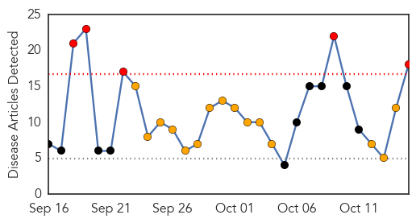
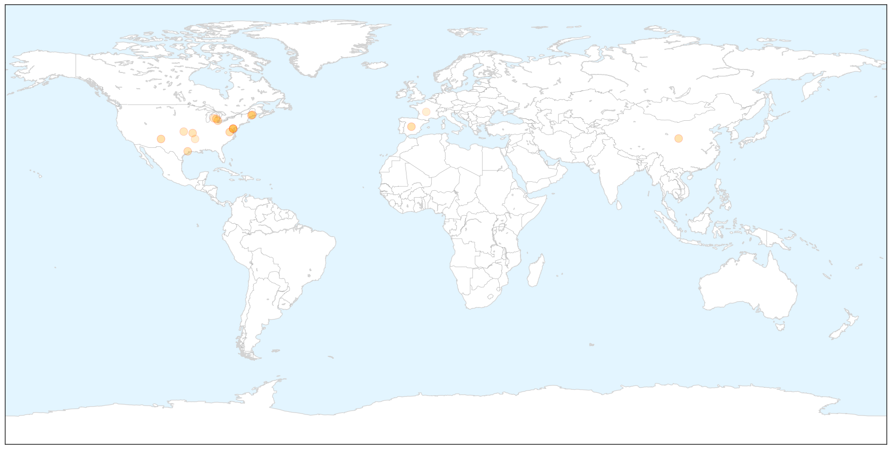

Unknown
30-Day Web Trend
0 alerts, 0 warnings

30-Day Twitter Trend
2 alerts, 0 warnings

Article Locations


Article Confidences

Top Articles:
- 0.980
- Fourth case of enterovirus confirmed
- 0.973
- Flu season could be harsher this year, experts say
- 0.972
- Get Healthy Carson City: It’s time to drive through to combat the flu
- 0.956
- Dr. Oz: Enterovirus killed two children and Martina McBride's healthy cookbook
- 0.942
- Virus is no reason for panic, medical officials say
- 0.921
- Arkansas delaying community flu shot clinics
- 0.917
- Chicago Tribune
- 0.917
- Chicago Tribune
- 0.917
- Chicago Tribune
- 0.917
- Chicago Tribune
- 0.917
- Chicago Tribune
- 0.917
- Chicago Tribune
- 0.917
- Chicago Tribune
- 0.917
- Chicago Tribune
- 0.917
- Chicago Tribune
- 0.917
- Chicago Tribune
- 0.917
- Chicago Tribune
- 0.917
- Chicago Tribune
- 0.917
- Chicago Tribune
- 0.917
- Chicago Tribune
- 0.897
- Health officials probing death of Arizona boy for possible enterovirus
- 0.867
- Rising health concerns of IDPs
- 0.866
- Obama promises more aggressive response to Ebola fears in United States
- 0.866
- UAE says isolates passenger from Liberia for Ebola checks
- 0.848
- 65 villagers fall ill, doc blames contaminated water supply
- 0.787
- West Milford takes enterovirus precautions due to suspected, unconfirmed case
- 0.783
- News, Weather, Sports, Breaking News
- 0.756
- HealthCare Partners Nevada to Host Flu Shot Clini
- 0.715
- Tuberculosis cluster: Torres Strait islanders 'kept in the dark' about Yam Island cases
- 0.698
- Three million Europeans catch infections in hospital annually
- 0.695
- Bluetongue Persisting in Balkans, Greece
- 0.676
- Student's reported illness prompts Peoria school cleaning
- 0.657
- Symptoms, Treatment and Prevention
- 0.650
- Koppel and Gordon: Learn, don’t blame, after Dallas hospital’s Ebola diagnostic failure
- 0.646
- Update: Students, Faculty Tested for TB at Thaxton ES
- 0.635
- AIDS scientists optimistic of AIDS cure, for some
- 0.622
- Adena focuses on hand hygiene to protect staff, patients
- 0.621
- Bohol Earthquake: One year on - Philippines
- 0.617
- World's first malaria vaccine may hit markets by 2015
- 0.588
- Pak key to anti-polio campaign: WHO
- 0.579
- Sunday Morning News: State Spending Millions On Ebola Defense
- 0.570
- WCAX.COM Local Vermont News, Weather and Sports-
- 0.560
- Assessing BVD risk
- 0.559
- MPI releases list of potential food poisoning sources
- 0.559
- MPI releases list of potential food poisoning sources
- 0.552
- Test results into gastro bug revealed
- 0.551
- Government Places Andalusia in Bluetongue Lock Down
- 0.546
- Experts question new TB test, say could lead to drug resistance
- 0.535
- Scientists say baby born with dreaded HIV ailment miraculously cured
- 0.508
- Orlando, FL Residents Suffering from Gum Disease Are Encouraged to Seek Treatment through Laser Gum Surgery with Drs. Richard Chace, Jr., Rodney Horvat and Scott G. Cohen
Showing top 50 articles...
Top Tweets:
- 0.647
- Case numbers refer to the number of people who have been confirmed to have EV-D68 infection.
- 0.543
- .@itsmepanda1 Flu activity often begins increasing in Oct peaking between Dec. & Feb. Getting a flu vax before flu activity begins is best
Influenza
30-Day Web Trend
5 alerts, 15 warnings

30-Day Twitter Trend
2 alerts, 0 warnings

Article Locations

X

Article Confidences

Top Articles:
- 0.999
- Lebanon VA Medical Center requests visitation restrictions as flu season intensifies
- 0.997
- Roll up your sleeve — it’s time to get a flu shot
- 0.993
- 'Like an oil change,' drive-thru flu shots available in Genesee County for the first time
- 0.990
- Scientists 'must not become complacent' when assessing pandemic threat from flu viruses
- 0.986
- proactive steps to stop virus
- 0.986
- proactive steps to stop virus
- 0.981
- CDC speaks on enterovirus link to illegal-alien kids
- 0.957
- Assessing the threat level of Enterovirus in W. Mich.
- 0.925
- Woman infected with bird flu virus delivers healthy child
- 0.905
- Houston doctor explains RSV, a virus that likely affects your kids
- 0.905
- H1N1 flu shots 'safe for pregnant women'
- 0.877
- Students encouraged to get flu vaccinations
- 0.849
- Clinics for free flu shots start Wednesday in Springfield
- 0.766
- US researchers tracking flu through Twitter
- 0.729
- Eastern Michigan University vaccinating students for the flu
- 0.595
- Arkansas delaying community flu shot clinics
- 0.586
- Immunization rates low among kidney transplant candidates
- 0.524
- In 1941 We Thought We Could Eradicate Airborne Diseases
Top Tweets:
- 0.664
- Statistics elementary Watson Rt: The virus you should really worry about is influenza not Ebola http://t.co/kvjgk7RKkW